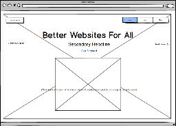
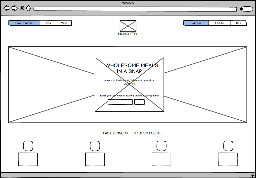

Design Challenge 1
Which two websites are you most inspired by?
The two websites I am most inspired by are SquareSpace and Munchery. Both use large photos as backgrounds that really catch your eye.
How do they exhibit effective use of space, size or balance?
Both sites use large colorful images as the background of the page. The negative space on the page is where many important links are found. The negative space helps direct the user's eye and gives the page balance.
What makes them similar and different?
The SquareSpace page has a hero image that occupies the entire screen. There is very little white space and the emphasis is on a central image that showcases a SquareSpace design. The Munchery website, while also using a large hero image, has more white space which helps to draw the viewer's eye to the center of the page. Both sites are very clean, with similar typography. The typography on both sites is black or neutral, allowing the colorful images to jump off the page.
Thumbnail Sketches & Process
SquareSpace
 The focal point of this site is the example of a SquareSpace site featured in the center of the page.
The hierarchy and flow starts at the top with various navigation buttons, but your attention is grabbed by the large images that feature site designs. Instead of directing your eye from top to bottom, the site has a strong hero image where your eye is meant to travel from left to right.
The balance on the SquareSpace site is centered, to focus your attention. The background, while busy allows a central image to standout.
The focal point of this site is the example of a SquareSpace site featured in the center of the page.
The hierarchy and flow starts at the top with various navigation buttons, but your attention is grabbed by the large images that feature site designs. Instead of directing your eye from top to bottom, the site has a strong hero image where your eye is meant to travel from left to right.
The balance on the SquareSpace site is centered, to focus your attention. The background, while busy allows a central image to standout.
Munchery
 The focal point of this site is the text featured in the center of the page where it asks the viewer to input information.
The hierarchy and focal point are easier to see. The site uses more negative space and though it uses large images like SquareSpace, the site looks cleaner and simpler.
The balance on Munchery is symmetrical as well but the whitespace on top puts more of an emphasis on navigation options. Unlike SquareSpace, the Munchery sites flow goes from top to bottom, guiding the viewer's eye down the page.
The focal point of this site is the text featured in the center of the page where it asks the viewer to input information.
The hierarchy and focal point are easier to see. The site uses more negative space and though it uses large images like SquareSpace, the site looks cleaner and simpler.
The balance on Munchery is symmetrical as well but the whitespace on top puts more of an emphasis on navigation options. Unlike SquareSpace, the Munchery sites flow goes from top to bottom, guiding the viewer's eye down the page.